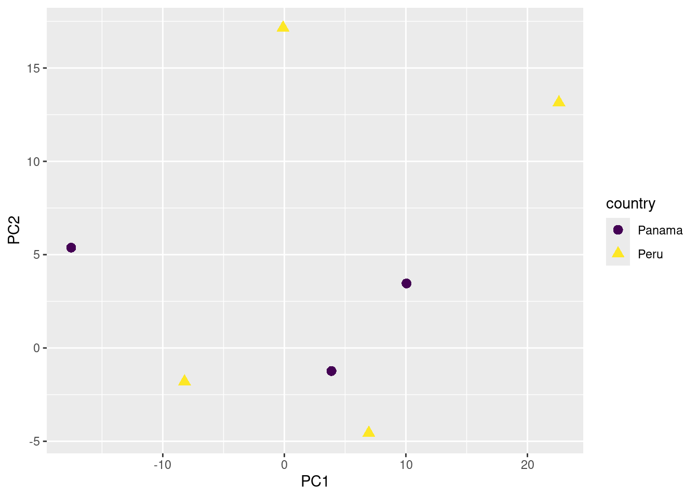
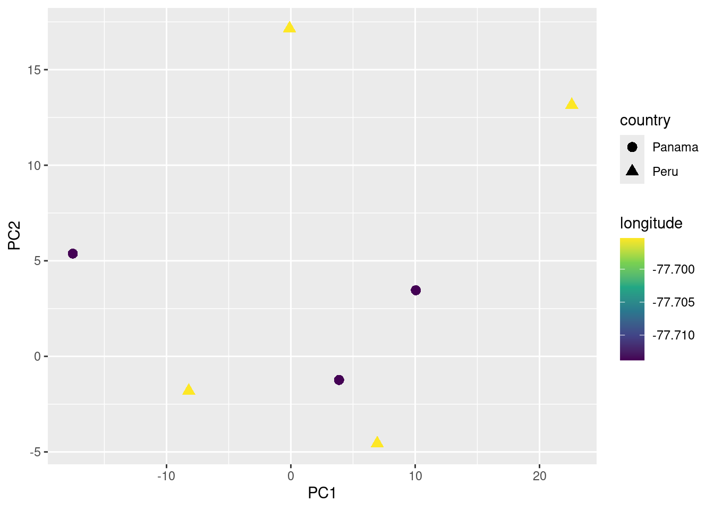

Code
library(suwo)
library(warbleR)
pg <- query_xenocanto('Phaethornis guy', all_data = TRUE)October 1, 2025
The warbleR function query_xc() queries for avian vocalization recordings in the open-access online repository Xeno-Canto. It can return recordings metadata or download the associated sound files.
Get recording metadata for green hermits (Phaethornis guy):
Keep only song vocalizations of high quality:
Map locations using map_xc():
Once you feel fine with the subset of data you can go ahead and download the sound files and save the metadata as a .csv file:
Now convert all to .wav format (mp3_2_wav) and homogenizing sampling rate and bit depth (fix_wavs):
Now songs should be manually annotated and all the selection in the .txt files should be pooled together in a single spreadsheet.
Once that is done we can read the spreadsheet with the package ‘readxl’ as follows:
| selec | Channel | start | end | bottom.freq | top.freq | selec.file |
|---|---|---|---|---|---|---|
| 1 | 1 | 0.7737 | 0.9939384 | 2.0962 | 7.7252 | Phaethornis-guy-2022.Table.1.selections.txt |
| 2 | 1 | 1.6837 | 1.9068363 | 2.0726 | 7.6074 | Phaethornis-guy-2022.Table.1.selections.txt |
| 3 | 1 | 10.1657 | 10.3917342 | 1.8371 | 8.0078 | Phaethornis-guy-2022.Table.1.selections.txt |
| 4 | 1 | 16.3237 | 16.5468363 | 2.0726 | 7.3248 | Phaethornis-guy-2022.Table.1.selections.txt |
| 5 | 1 | 1.6069 | 1.7517937 | 1.7193 | 8.7615 | Phaethornis-guy-2022.Table.1.selections.txt |
| 6 | 1 | 1.0129 | 1.1548958 | 1.7193 | 8.9264 | Phaethornis-guy-2022.Table.1.selections.txt |
Note that the column names should be: “start”, “end”, “bottom.freq”, “top.freq” and “sound.files”. In addition frequency columns (“bottom.freq” and “top.freq”) must be in kHz, not in Hz. We can check if the annotations are in the right format using warbleR’s check_sels():
checking annotations (step 0 of 0):all selections are OK
We can measured several parameters of acoustic structure with the warbleR function spectro_analysis():
Then we summarize those parameters with a Principal Component Analysis (PCA):
At this point should should get someting like this:
| sound.files | selec | PC1 | PC2 |
|---|---|---|---|
| Phaethornis-guy-227574.wav | 1 | 22.594040 | 13.148131 |
| Phaethornis-guy-227574.wav | 2 | -0.105172 | 17.152522 |
| Phaethornis-guy-227574.wav | 3 | -8.210292 | -1.806987 |
| Phaethornis-guy-227574.wav | 4 | 6.950001 | -4.559933 |
| Phaethornis-guy-238804.wav | 5 | -11.076147 | -7.156531 |
| Phaethornis-guy-238804.wav | 6 | -4.519000 | -8.129012 |
‘PC1’ and ‘PC2’ are the 2 new dimensions that will be used to represent the acoustic space.
Now we just need to add any metadata we considered important to try to explain acoustic similarities shown in the acoustic space scatterplot:
# read XC metadata
song_pg <- read.csv("./examples/p_guy/metadata_p_guy_XC.csv")
# create a column with the file name in the metadata
song_pg$sound.files <- paste0(song_pg$genus, "-", song_pg$specific_epithet, "-", song_pg$key, ".wav")
# and merge based on sound files and any metadata column we need
pca_data_md <- merge(pca_data, song_pg[, c("sound.files", "country", "latitude", "longitude")])
We are ready to plot the acoustic space scatterplot. For this we will use the package ‘ggplot2’:
Loading required package: viridisLite
You can also add information about their geographic location (in this case longitude) to the plot as follows:

We can even test if geographic distance is associated to acoustic distance (i.e. if individuals geographically closer produce more similar songs) using a mantel test (mantel function from the package vegan):
Mantel statistic based on Pearson's product-moment correlation
Call:
mantel(xdis = geo_dist, ydis = acoust_dist)
Mantel statistic r: -0.2146
Significance: 0.969
Upper quantiles of permutations (null model):
90% 95% 97.5% 99%
0.274 0.346 0.346 0.474
Permutation: free
Number of permutations: 5039
In this example no association between geographic and acoustic distance was detected (p value > 0.05).
─ Session info ───────────────────────────────────────────────────────────────
setting value
version R version 4.5.0 (2025-04-11)
os Ubuntu 22.04.5 LTS
system x86_64, linux-gnu
ui X11
language (EN)
collate en_US.UTF-8
ctype en_US.UTF-8
tz America/Costa_Rica
date 2025-10-01
pandoc 3.2 @ /usr/lib/rstudio/resources/app/bin/quarto/bin/tools/x86_64/ (via rmarkdown)
quarto 1.7.31 @ /usr/local/bin/quarto
─ Packages ───────────────────────────────────────────────────────────────────
package * version date (UTC) lib source
ada 2.0-5 2016-05-13 [1] CRAN (R 4.5.0)
bit 4.6.0 2025-03-06 [3] CRAN (R 4.5.0)
bit64 4.6.0-1 2025-01-16 [3] CRAN (R 4.5.0)
bitops 1.0-9 2024-10-03 [3] CRAN (R 4.5.0)
blob 1.2.4 2023-03-17 [3] CRAN (R 4.5.0)
brio 1.1.5 2024-04-24 [3] CRAN (R 4.5.0)
cachem 1.1.0 2024-05-16 [1] CRAN (R 4.5.0)
cellranger 1.1.0 2016-07-27 [3] CRAN (R 4.0.1)
class 7.3-23 2025-01-01 [4] CRAN (R 4.4.2)
cli 3.6.5 2025-04-23 [1] CRAN (R 4.5.0)
cluster 2.1.8.1 2025-03-12 [4] CRAN (R 4.4.3)
codetools 0.2-20 2024-03-31 [4] CRAN (R 4.5.0)
crosstalk 1.2.1 2023-11-23 [3] CRAN (R 4.5.0)
curl 7.0.0 2025-08-19 [1] CRAN (R 4.5.0)
data.table 1.17.8 2025-07-10 [1] CRAN (R 4.5.0)
DBI 1.2.3 2024-06-02 [1] CRAN (R 4.5.0)
devtools 2.4.5 2022-10-11 [1] CRAN (R 4.5.0)
digest 0.6.37 2024-08-19 [1] CRAN (R 4.5.0)
dplyr 1.1.4 2023-11-17 [1] CRAN (R 4.5.0)
dtw 1.23-1 2022-09-19 [1] CRAN (R 4.5.0)
e1071 1.7-16 2024-09-16 [1] CRAN (R 4.5.0)
ellipsis 0.3.2 2021-04-29 [3] CRAN (R 4.1.1)
evaluate 1.0.5 2025-08-27 [1] CRAN (R 4.5.0)
evd 2.3-7.1 2024-09-21 [3] CRAN (R 4.5.0)
farver 2.1.2 2024-05-13 [1] CRAN (R 4.5.0)
fastmap 1.2.0 2024-05-15 [1] CRAN (R 4.5.0)
ff 4.5.2 2025-01-13 [1] CRAN (R 4.5.0)
fftw 1.0-9 2024-09-20 [3] CRAN (R 4.5.0)
foreach 1.5.2 2022-02-02 [3] CRAN (R 4.1.2)
fs 1.6.6 2025-04-12 [1] CRAN (R 4.5.0)
future 1.67.0 2025-07-29 [1] CRAN (R 4.5.0)
future.apply 1.20.0 2025-06-06 [1] CRAN (R 4.5.0)
generics 0.1.4 2025-05-09 [1] CRAN (R 4.5.0)
ggplot2 * 4.0.0 2025-09-11 [1] CRAN (R 4.5.0)
globals 0.18.0 2025-05-08 [1] CRAN (R 4.5.0)
glue 1.8.0 2024-09-30 [1] CRAN (R 4.5.0)
gridExtra 2.3 2017-09-09 [1] CRAN (R 4.5.0)
gtable 0.3.6 2024-10-25 [1] CRAN (R 4.5.0)
htmltools 0.5.8.1 2024-04-04 [1] CRAN (R 4.5.0)
htmlwidgets 1.6.4 2023-12-06 [1] RSPM (R 4.5.0)
httpuv 1.6.16 2025-04-16 [1] RSPM (R 4.5.0)
httr 1.4.7 2023-08-15 [3] CRAN (R 4.5.0)
ipred 0.9-15 2024-07-18 [3] CRAN (R 4.5.0)
iterators 1.0.14 2022-02-05 [3] CRAN (R 4.1.2)
jpeg 0.1-11 2025-03-21 [3] CRAN (R 4.5.0)
jquerylib 0.1.4 2021-04-26 [1] CRAN (R 4.5.0)
jsonlite 2.0.0 2025-03-27 [1] CRAN (R 4.5.0)
kableExtra 1.4.0 2024-01-24 [1] CRAN (R 4.5.0)
knitr * 1.50 2025-03-16 [1] CRAN (R 4.5.0)
labeling 0.4.3 2023-08-29 [1] CRAN (R 4.5.0)
later 1.4.2 2025-04-08 [1] RSPM (R 4.5.0)
lattice 0.22-7 2025-04-02 [4] CRAN (R 4.5.0)
lava 1.8.1 2025-01-12 [3] CRAN (R 4.5.0)
leaflet 2.2.2 2024-03-26 [1] CRAN (R 4.5.0)
lifecycle 1.0.4 2023-11-07 [1] CRAN (R 4.5.0)
listenv 0.9.1 2024-01-29 [1] CRAN (R 4.5.0)
lubridate 1.9.4 2024-12-08 [3] CRAN (R 4.5.0)
magrittr 2.0.4 2025-09-12 [1] CRAN (R 4.5.0)
MASS 7.3-65 2025-02-28 [4] CRAN (R 4.4.3)
Matrix 1.7-3 2025-03-11 [4] CRAN (R 4.4.3)
memoise 2.0.1 2021-11-26 [3] CRAN (R 4.1.2)
mgcv 1.9-3 2025-04-04 [4] CRAN (R 4.5.0)
mime 0.13 2025-03-17 [1] CRAN (R 4.5.0)
miniUI 0.1.2 2025-04-17 [3] CRAN (R 4.5.0)
NatureSounds * 1.0.5 2025-01-17 [1] CRAN (R 4.5.0)
nlme 3.1-168 2025-03-31 [4] CRAN (R 4.4.3)
nnet 7.3-20 2025-01-01 [4] CRAN (R 4.4.2)
parallelly 1.45.1 2025-07-24 [1] CRAN (R 4.5.0)
pbapply 1.7-4 2025-07-20 [1] CRAN (R 4.5.0)
permute * 0.9-8 2025-06-25 [1] CRAN (R 4.5.0)
pillar 1.11.0 2025-07-04 [1] CRAN (R 4.5.0)
pkgbuild 1.4.8 2025-05-26 [1] CRAN (R 4.5.0)
pkgconfig 2.0.3 2019-09-22 [1] CRAN (R 4.5.0)
pkgload 1.4.0 2024-06-28 [1] CRAN (R 4.5.0)
prodlim 2025.04.28 2025-04-28 [3] CRAN (R 4.5.0)
profvis 0.4.0 2024-09-20 [1] CRAN (R 4.5.0)
promises 1.3.3 2025-05-29 [1] RSPM (R 4.5.0)
proxy 0.4-27 2022-06-09 [1] CRAN (R 4.5.0)
purrr 1.1.0 2025-07-10 [1] CRAN (R 4.5.0)
R6 2.6.1 2025-02-15 [1] CRAN (R 4.5.0)
RColorBrewer 1.1-3 2022-04-03 [1] CRAN (R 4.5.0)
Rcpp 1.1.0 2025-07-02 [1] CRAN (R 4.5.0)
RCurl 1.98-1.17 2025-03-22 [1] CRAN (R 4.5.0)
readxl * 1.4.5 2025-03-07 [3] CRAN (R 4.5.0)
RecordLinkage 0.4-12.5 2025-07-28 [1] CRAN (R 4.5.0)
remotes 2.5.0 2024-03-17 [1] CRAN (R 4.5.0)
rjson 0.2.23 2024-09-16 [1] CRAN (R 4.5.0)
rlang 1.1.6 2025-04-11 [1] CRAN (R 4.5.0)
rmarkdown 2.30 2025-09-28 [1] CRAN (R 4.5.0)
rpart 4.1.24 2025-01-07 [4] CRAN (R 4.4.2)
RSQLite 2.4.3 2025-08-20 [1] CRAN (R 4.5.0)
rstudioapi 0.17.1 2024-10-22 [1] CRAN (R 4.5.0)
S7 0.2.0 2024-11-07 [1] CRAN (R 4.5.0)
scales 1.4.0 2025-04-24 [1] CRAN (R 4.5.0)
seewave * 2.2.4 2025-08-19 [1] CRAN (R 4.5.0)
sessioninfo 1.2.3 2025-02-05 [3] CRAN (R 4.5.0)
shiny 1.10.0 2024-12-14 [1] CRAN (R 4.5.0)
shinyBS 0.61.1 2022-04-17 [1] CRAN (R 4.5.0)
signal 1.8-1 2024-06-26 [1] CRAN (R 4.5.0)
soundgen 2.7.2 2025-01-22 [1] CRAN (R 4.5.0)
stringi 1.8.7 2025-03-27 [1] CRAN (R 4.5.0)
stringr 1.5.2 2025-09-08 [1] CRAN (R 4.5.0)
survival 3.8-3 2024-12-17 [4] CRAN (R 4.4.2)
suwo * 0.1.0 2025-09-30 [1] local
svglite 2.2.1 2025-05-12 [1] CRAN (R 4.5.0)
systemfonts 1.2.3 2025-04-30 [3] CRAN (R 4.5.0)
testthat 3.2.3 2025-01-13 [1] CRAN (R 4.5.0)
textshaping 1.0.3 2025-09-02 [1] CRAN (R 4.5.0)
tibble 3.3.0 2025-06-08 [1] RSPM (R 4.5.0)
tidyselect 1.2.1 2024-03-11 [1] CRAN (R 4.5.0)
timechange 0.3.0 2024-01-18 [3] CRAN (R 4.5.0)
tuneR * 1.4.7 2024-04-17 [1] CRAN (R 4.5.0)
urlchecker 1.0.1 2021-11-30 [1] CRAN (R 4.5.0)
usethis 3.1.0 2024-11-26 [3] CRAN (R 4.5.0)
vctrs 0.6.5 2023-12-01 [1] CRAN (R 4.5.0)
vegan * 2.7-1 2025-06-05 [1] CRAN (R 4.5.0)
viridis * 0.6.5 2024-01-29 [1] CRAN (R 4.5.0)
viridisLite * 0.4.2 2023-05-02 [1] CRAN (R 4.5.0)
warbleR * 1.1.36 2016-04-19 [1] CRAN (R 4.5.0)
withr 3.0.2 2024-10-28 [1] CRAN (R 4.5.0)
xfun 0.53 2025-08-19 [1] CRAN (R 4.5.0)
xml2 1.4.0 2025-08-20 [1] CRAN (R 4.5.0)
xtable 1.8-4 2019-04-21 [3] CRAN (R 4.0.1)
yaml 2.3.10 2024-07-26 [1] CRAN (R 4.5.0)
[1] /home/m/R/x86_64-pc-linux-gnu-library/4.5
[2] /usr/local/lib/R/site-library
[3] /usr/lib/R/site-library
[4] /usr/lib/R/library
* ── Packages attached to the search path.
──────────────────────────────────────────────────────────────────────────────---
title: <font size="7"><b>Case study</b></font>
toc: true
toc-depth: 2
toc-location: left
number-sections: true
highlight-style: pygments
format:
html:
df-print: kable
code-fold: show
code-tools: true
css: styles.css
---
::: {.alert .alert-info}
## **Objetive** {.unnumbered .unlisted}
- Demonstrate how to articulate functions used during the course to obtain, explore and quantify acoustic data
:::
## Download Xeno-Canto data
The warbleR function [`query_xc()`](https://marce10.github.io/warbleR/reference/query_xc.html) queries for avian vocalization recordings in the open-access online repository [Xeno-Canto](https://xeno-canto.org). It can return recordings metadata or download the associated sound files.
Get recording metadata for green hermits (*Phaethornis guy*):
```{r, echo=FALSE,message=FALSE, warning=FALSE}
library(warbleR)
library(suwo)
```
```{r, message=FALSE, warning=FALSE, eval = FALSE}
library(suwo)
library(warbleR)
pg <- query_xenocanto('Phaethornis guy', all_data = TRUE)
```
Keep only song vocalizations of high quality:
```{r, eval = FALSE}
song_pg <- pg[grepl("song", ignore.case = TRUE, pg$vocalization_type) & pg$quality == "A", ]
# remove 1 site from Colombia to have a few samples per country
song_pg <- song_pg[song_pg$locality != "Suaita, Santander", ]
```
```{r, eval= FALSE, echo=FALSE}
write.csv(song_pg, file = "./examples/p_guy/metadata_p_guy_XC.csv", row.names = FALSE)
```
```{r, echo=FALSE}
song_pg <- read.csv("./examples/p_guy/metadata_p_guy_XC.csv")
```
Map locations using [`map_xc()`](https://marce10.github.io/warbleR/reference/map_xc.html):
```{r, results = 'asis', fig.width=9}
map_locations(song_pg)
```
Once you feel fine with the subset of data you can go ahead and download the sound files and save the metadata as a .csv file:
```{r, eval = FALSE, fig.width=10}
download_media(song_pg, path = "./examples/p_guy", parallel = 3)
write.csv(song_pg, file = "./examples/p_guy/metadata_p_guy_XC.csv", row.names = FALSE)
```
## Preparing sound files for analysis (optional)
Now convert all to .wav format (`mp3_2_wav`) and homogenizing sampling rate and bit depth (`fix_wavs`):
```{r, eval = FALSE}
mp3_2_wav(samp.rate = 22.05, path = "./examples/p_guy")
fix_wavs(path = "./examples/p_guy", samp.rate = 44.1, bit.depth = 16)
```
## Annotating sound files in Raven
Now songs should be manually annotated and all the selection in the .txt files should be pooled together in a single spreadsheet.
## Importing annotations into R
Once that is done we can read the spreadsheet with the package 'readxl' as follows:
```{r, eval = FALSE, echo = FALSE}
library(Rraven)
ann_p_guy <- imp_raven(path = "./examples/p_guy", warbler.format = TRUE)
check_sels(ann_p_guy, path = "./examples/p_guy/converted_sound_files/")
write.csv(ann_p_guy, file = "./examples/p_guy/annotations_p_guy.csv", row.names = FALSE)
```
```{r, eval = FALSE}
# install.packages("readxl") # install if needed
# load package
library(readxl)
# read data
annotations <- read_excel(path = "./examples/p_guy/annotations_p_guy.xlsx")
# check data
head(annotations)
```
```{r, echo=FALSE}
# load package
library(readxl)
# read data
annotations <- read_excel(path = "./examples/p_guy/annotations_p_guy.xlsx")
kable(annotations[1:6, -7])
```
Note that the column names should be: "start", "end", "bottom.freq", "top.freq" and "sound.files". In addition frequency columns ("bottom.freq" and "top.freq") must be in kHz, not in Hz. We can check if the annotations are in the right format using warbleR's `check_sels()`:
```{r}
sound_file_path <- "./examples/p_guy/converted_sound_files/"
cs <- check_sels(annotations, path = sound_file_path)
```
## Measure acoustic structure
We can measured several parameters of acoustic structure with the warbleR function `spectro_analysis()`:
```{r, warning=FALSE, message=FALSE}
sp <- spectro_analysis(X = annotations, path = sound_file_path)
```
Then we summarize those parameters with a Principal Component Analysis (PCA):
```{r}
# run excluding sound file and selec columns
pca <- prcomp(sp[, -c(1, 2)])
# add first 2 PCs to sound file and selec columns
pca_data <- cbind(sp[, c(1, 2)], pca$x[, 1:2])
```
At this point should should get someting like this:
```{r, eval = FALSE}
head(pca_data)
```
```{r, echo = FALSE}
kable(pca_data[1:6, ])
```
'PC1' and 'PC2' are the 2 new dimensions that will be used to represent the acoustic space.
## Adding metadata
Now we just need to add any metadata we considered important to try to explain acoustic similarities shown in the acoustic space scatterplot:
```{r}
# read XC metadata
song_pg <- read.csv("./examples/p_guy/metadata_p_guy_XC.csv")
# create a column with the file name in the metadata
song_pg$sound.files <- paste0(song_pg$genus, "-", song_pg$specific_epithet, "-", song_pg$key, ".wav")
# and merge based on sound files and any metadata column we need
pca_data_md <- merge(pca_data, song_pg[, c("sound.files", "country", "latitude", "longitude")])
```
## Assessing geographic patterns of variation
We are ready to plot the acoustic space scatterplot. For this we will use the package 'ggplot2':
```{r}
# install.packages("ggplot2")
library(ggplot2)
# install.packages("viridis")
library(viridis)
# plot
ggplot(data = pca_data_md, aes(x = PC1, y = PC2, color = country, shape = country)) +
geom_point(size = 3) +
scale_color_viridis_d()
```
You can also add information about their geographic location (in this case longitude) to the plot as follows:
```{r}
# plot
ggplot(data = pca_data_md, aes(x = PC1, y = PC2, color = longitude, shape = country)) +
geom_point(size = 3) +
scale_color_viridis_c()
```
We can even test if geographic distance is associated to acoustic distance (i.e. if individuals geographically closer produce more similar songs) using a [mantel test](https://en.wikipedia.org/wiki/Mantel_test) (`mantel` function from the package vegan):
```{r, warning=FALSE, message=FALSE}
# create geographic and acoustic distance matrices
geo_dist <- dist(pca_data_md[, c("latitude", "longitude")])
acoust_dist <- dist(pca_data_md[, c("PC1", "PC2")])
# install.packages("vegan")
library(vegan)
# run test
mantel(geo_dist, acoust_dist)
```
In this example no association between geographic and acoustic distance was detected (p value \> 0.05).
------------------------------------------------------------------------
<!-- add packages used, system details and versions -->
# Session information {.unnumbered .unlisted}
<details>
<summary>Click to see</summary>
```{r session info}
#| echo: false
# if devtools is installed use devtools::session_info()
if (requireNamespace("devtools", quietly = TRUE)) {
devtools::session_info()
} else {
sessionInfo()
}
```
</details>